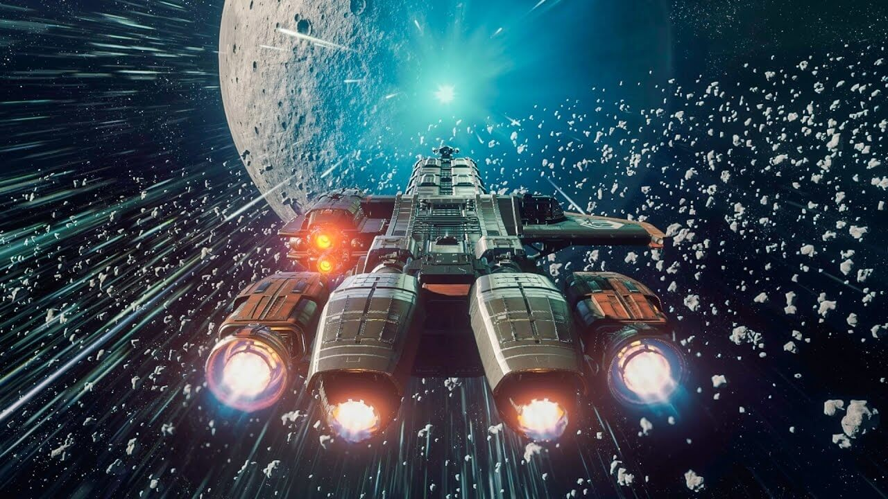

What is Star citizen?
Star citizen is a First person shooter in a massivly multiplayer universe with aspects of a role playing game. 100% crowd funded, Star Citizen aims to create a living, breathing science fiction universe with unparalleled immersion, where you get given a gun and a ship and then the rest of the universe is yours to do whatever you want in. Everything is a 1-1 scale meaning all the planets in game are to the same scale as a real life planet. You can land onto and take of from any point of any planet with 0 loading screens and explore the rest of the unverse without them too. although star citizen is more than just a game it has brought together thousands of people and soon to bring together many more. with such a passionate community star citizen has considerd to be the fans just as much as the game.